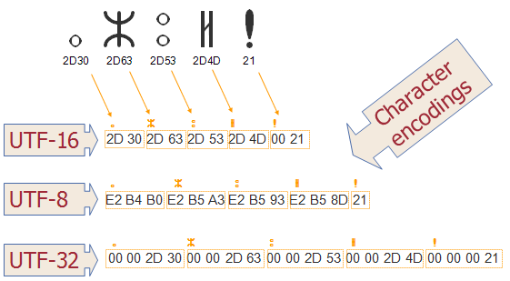

The charset element
Purpose of character encoding
Intro
When thinking of a soft web element with connection to the print industry, my mind turned towards many of the basic elements of printing technology. I thought of the typesets used by mass newspaper printers an even earlier systems used for printing early books. What characters could be included in a typeset varied depending on the manufacturer and the country. I wish to explain how the current character encoding standards came about and how earlier print industry standards influenced the development of the standards we use today.
The purpose of the charset element is as an encoding system for character.
It standarizes the encoding of characters for the interchanging of text in electronic form.
When included in the head of the HTML document it will create an encoding reference for all displayed text within the document, determining its appearance in HTML.
The styles of the characters themselves are known as fonts, and the charset element should not be confused with those that determine fonts. While a font will determine what how a character can be displayed, the charset determines if that character is even allowed on the page.
The charset functions as a type of sign system (Haas, p. 212) that determines what signs the composer of a page or document may use to communicate. It restricts the signs to a set of characters that are stored as binary code. It is a writing tool that determines just what characters can be written.